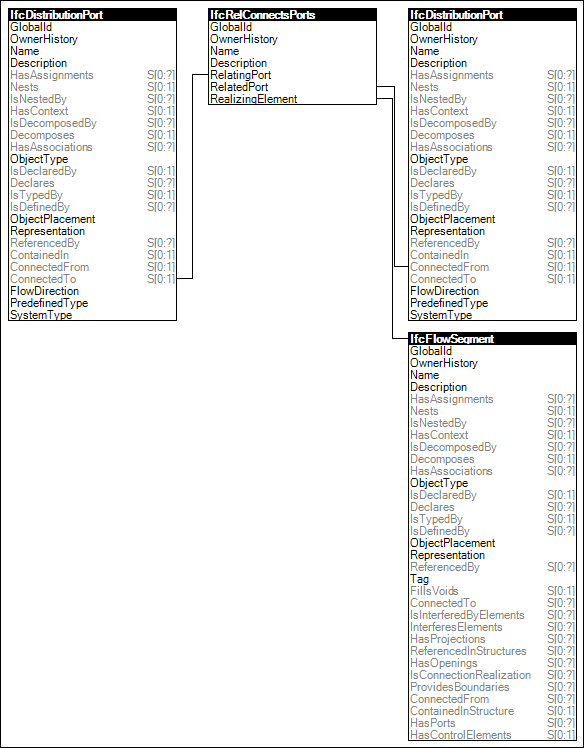

Ports on objects may be connected using elements such as cables, ducts, or pipes.
Figure 83 illustrates an instance diagram.

Figure 83 — Port Connectivity
Link to this page
 Link to this page
Link to this page